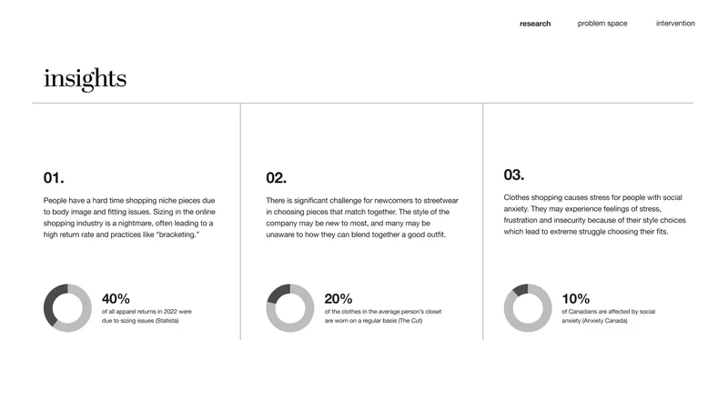
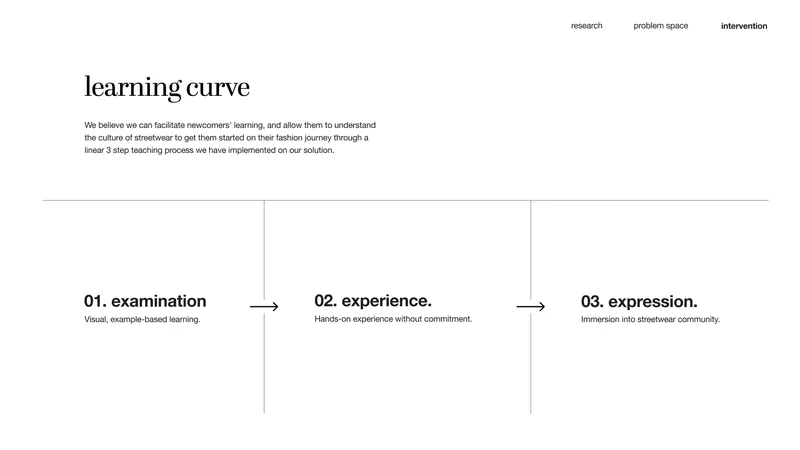

Stüssy Web Experience Redesign
This five-person project for IAT 235 asked us to design a solution for a web-based business that could benefit from usability improvements. It was a collaborative project where everyone, including myself, contributed to research, writing, designing, prototyping and presentation. Our final concept for streetwear brand Stüssy proposed an interactive web experience featuring a virtual mannequin tool, curated outfit examples and a community gallery to help users who are new to streetwear culture shop with confidence and style.
Research & Insights
My first step was selecting a business and researching its current platform, user base and potential usability issues. Through research into Stüssy, customer comments and secondary sources, I helped define three key insights supported by statistics:
- Sizing inconsistencies create frustration and high return rates in online apparel (Statista, 2023).
- It is difficult to match niche streetwear pieces into cohesive outfits (Friedman, 2013).
- Shopping anxiety, especially for users unsure of their style, is common (Radin, 2022; Anxiety Canada).

These insights showed that people struggle with niche pieces because of body image and fitting issues, and that sizing in online shopping often leads to practices like "bracketing" and avoidable returns. Grounding the project in this research justified why an intervention was needed.
Framing the Problem
Working iteratively with instructor feedback, I refined the framing and problem statement so they were clear and tangible.
Framing: How might we encourage those new to fashion to experience streetwear culture and express themselves in a way that is unique to their own identity by providing them with foundational fashion knowledge?
Problem statement: We propose to create a supportive shopping aide that gives streetwear beginners guidance for outfit matching and better visualisation of sizing in order to reduce doubt while shopping.
These statements emerged from deeper research into the company, its customers and streetwear fashion more broadly. We collected this information and distilled it into three key insights accompanied by "driving statistics". This directly informed our design concept of an interactive virtual mannequin tool that lets users experiment with outfits, sizing and style before purchasing. By grounding the concept in measurable problems, we ensured the solution was not just creative, but necessary and impactful.
In terms of text and presentation, I focused on making the framing and problem statement concise enough to keep the team aligned throughout design and not be pulled in unrelated directions. Although the project was very visual, it was important that our interface and curated outfits clearly communicated what was and was not possible. Showing accurate product imagery alongside authentic community styling reinforced user trust and confidence.
Concept Development & Design
I established a 3-step process for integrating individuals new to streetwear fashion:

Examination phase: A new product page module featuring curated outfit examples with links to the other products shown, and a community gallery where customers could post images of themselves wearing that piece. This served as a form of visual learning, helping newcomers understand how to style streetwear outfits.

Experience phase: An adjustable virtual mannequin matching user attributes. Customers could apply the clothing items from their cart to preview a complete outfit before purchase.
Expression: Users could then try products on in real life and share their styled looks back to the community portal, continuing the cycle of inspiration and learning for others.
Prototype & Reflection
The final step was designing interactions through Figma and animating a user journey with Premiere Pro.
The biggest challenge was identifying a problem that was both research backed and within our scope so we could design a solution that could make tangible impact. I learned the importance of validating ideas with data, framing them clearly, and creating features informed by this research.
By supporting our initial concept with statistics and user insights, we built a solution that was both credible and tangible. This reflects my ethos as a designer who uses data to inform concepts and clear communication to turn them into real, accessible, user-centred experiences.